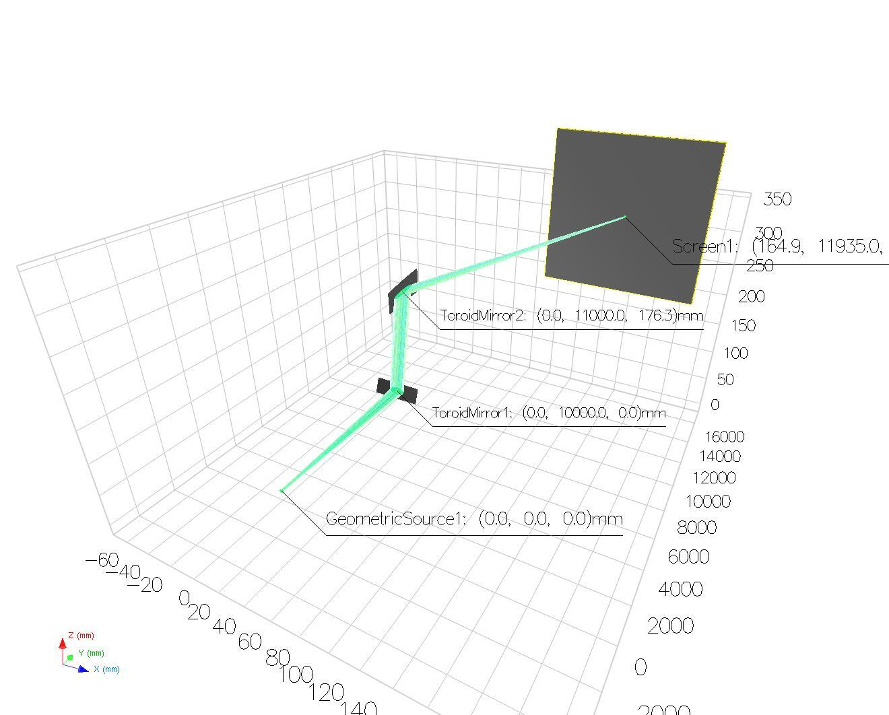
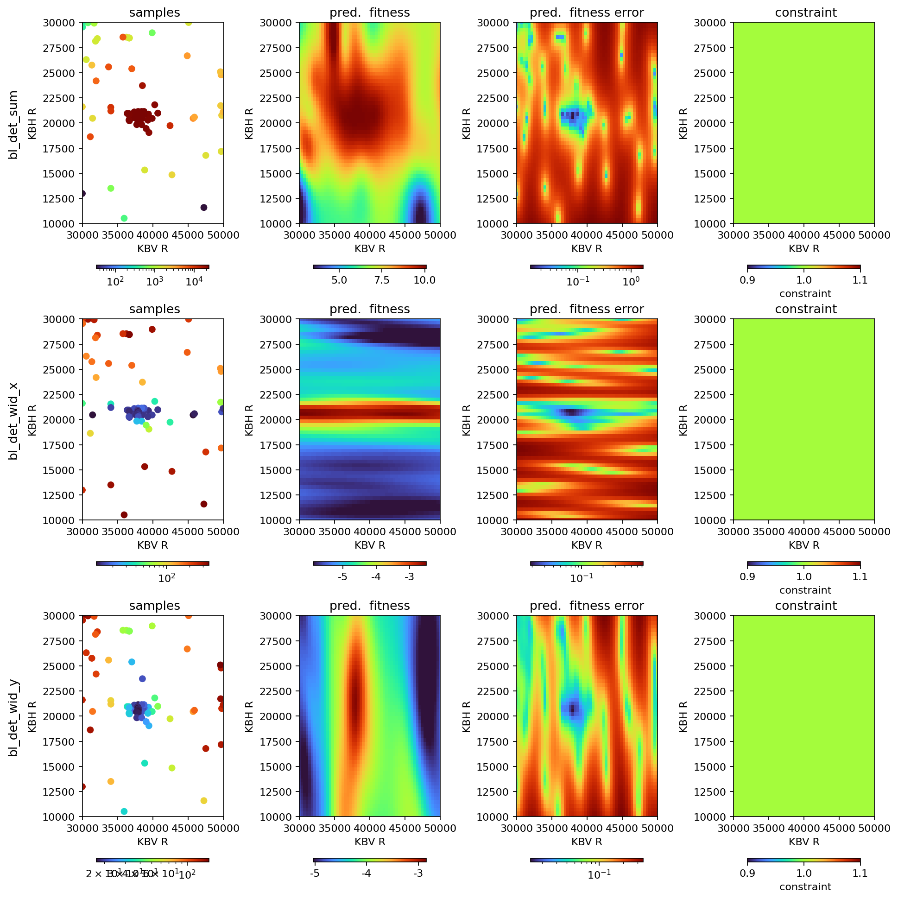

XRT Blop Demo¶
For ophyd beamline setup see:
https://github.com/NSLS-II/blop/blob/main/src/blop/sim/xrt_beamline.py
https://github.com/NSLS-II/blop/blob/main/src/blop/sim/xrt_kb_model.py
The picture below displays beam from geometric source propagating through a pair of toroidal mirrors focusing the beam on screen. Simulation of a KB setup.

[1]:
from blop.utils import prepare_re_env # noqa
%run -i $prepare_re_env.__file__ --db-type=temp
bec.disable_plots()
[2]:
import sys, os
from matplotlib import pyplot as plt
from blop.sim.xrt_beamline import Beamline
from blop import DOF, Objective, Agent
from blop.digestion import beam_stats_digestion
import time
[3]:
plt.ion()
h_opt = 0
dh = 5
R1, dR1 = 40000, 10000
R2, dR2 = 20000, 10000
[4]:
beamline = Beamline(name="bl")
time.sleep(1)
dofs = [
DOF(description="KBV R",
device=beamline.kbv_dsv,
search_domain=(R1-dR1, R1+dR1)),
DOF(description="KBH R",
device=beamline.kbh_dsh,
search_domain=(R2-dR2, R2+dR2)),
]
[5]:
objectives = [
Objective(name="bl_det_sum",
target="max",
transform="log",
trust_domain=(20, 1e12)),
Objective(name="bl_det_wid_x",
target="min",
transform="log",
# trust_domain=(0, 1e12),
latent_groups=[("bl_kbh_dsh", "bl_kbv_dsv")]),
Objective(name="bl_det_wid_y",
target="min",
transform="log",
# trust_domain=(0, 1e12),
latent_groups=[("bl_kbh_dsh", "bl_kbv_dsv")]),
]
[6]:
agent = Agent(
dofs=dofs,
objectives=objectives,
detectors=[beamline.det],
digestion=beam_stats_digestion,
digestion_kwargs={"image_key": "bl_det_image"},
verbose=True,
db=db,
tolerate_acquisition_errors=False,
enforce_all_objectives_valid=True,
train_every=3,
)
[7]:
RE(agent.learn("qr", n=16))
RE(agent.learn("qei", n=16, iterations=4))
2025-03-04 22:05:47.445 INFO: Executing plan <generator object Agent.learn at 0x7f138e259150>
2025-03-04 22:05:47.448 INFO: Change state on <bluesky.run_engine.RunEngine object at 0x7f138f7375e0> from 'idle' -> 'running'
2025-03-04 22:05:47.449 INFO: running iteration 1 / 1
Transient Scan ID: 1 Time: 2025-03-04 22:05:47
Persistent Unique Scan ID: '3b9fe236-cb72-43e4-b8f8-6aa45d34de01'
ToroidMirror2 center: [0, 11000, np.float64(176.33233386744536)]
New stream: 'primary'
+-----------+------------+------------+------------+------------+--------------+--------------+--------------+--------------+
| seq_num | time | bl_kbv_dsv | bl_kbh_dsh | bl_det_sum | bl_det_cen_x | bl_det_cen_y | bl_det_wid_x | bl_det_wid_y |
+-----------+------------+------------+------------+------------+--------------+--------------+--------------+--------------+
| 1 | 22:05:47.6 | 30415.156 | 11555.808 | 13.658 | 178.333 | 138.750 | 356.667 | 146.500 |
| 2 | 22:05:47.8 | 36561.145 | 13103.970 | 4119.268 | 208.071 | 151.502 | 337.282 | 26.753 |
| 3 | 22:05:47.9 | 44241.688 | 10198.502 | 20.616 | 171.708 | 157.250 | 343.417 | 45.000 |
| 4 | 22:05:48.1 | 47568.617 | 14285.727 | 249.310 | 206.650 | 148.200 | 285.900 | 88.800 |
| 5 | 22:05:48.2 | 45387.438 | 15760.224 | 1396.829 | 219.200 | 147.775 | 220.000 | 95.250 |
| 6 | 22:05:48.3 | 39369.750 | 16941.980 | 2629.677 | 218.906 | 149.689 | 170.312 | 41.503 |
| 7 | 22:05:48.4 | 41435.086 | 19837.072 | 19203.276 | 205.536 | 147.211 | 22.503 | 50.295 |
| 8 | 22:05:48.6 | 43749.195 | 20947.266 | 7753.277 | 194.347 | 156.851 | 14.274 | 80.020 |
| 9 | 22:05:48.8 | 49479.578 | 24409.488 | 3459.692 | 207.122 | 149.879 | 146.769 | 123.767 |
| 10 | 22:05:48.9 | 47286.363 | 25552.189 | 3004.595 | 200.454 | 150.373 | 146.358 | 102.705 |
| 11 | 22:05:49.1 | 40930.184 | 29004.037 | 8041.268 | 205.979 | 151.879 | 254.057 | 41.974 |
| 12 | 22:05:49.2 | 38620.816 | 26753.246 | 6532.818 | 231.375 | 153.931 | 247.250 | 27.590 |
| 13 | 22:05:49.4 | 34449.238 | 27666.029 | 5975.039 | 196.643 | 152.149 | 223.529 | 61.783 |
| 14 | 22:05:49.5 | 35805.027 | 23208.434 | 17789.008 | 204.824 | 153.682 | 99.847 | 43.517 |
| 15 | 22:05:49.7 | 32257.721 | 22285.273 | 9172.649 | 204.152 | 156.237 | 78.252 | 103.143 |
| 16 | 22:05:49.8 | 32599.250 | 18479.766 | 9376.119 | 209.960 | 151.751 | 98.166 | 97.039 |
+-----------+------------+------------+------------+------------+--------------+--------------+--------------+--------------+
generator list_scan ['3b9fe236'] (scan num: 1)
2025-03-04 22:05:51.807 INFO: Change state on <bluesky.run_engine.RunEngine object at 0x7f138f7375e0> from 'running' -> 'idle'
2025-03-04 22:05:51.808 INFO: Cleaned up from plan <generator object Agent.learn at 0x7f138e259150>
2025-03-04 22:05:51.810 INFO: Executing plan <generator object Agent.learn at 0x7f138e2590e0>
2025-03-04 22:05:51.811 INFO: Change state on <bluesky.run_engine.RunEngine object at 0x7f138f7375e0> from 'idle' -> 'running'
2025-03-04 22:05:51.812 INFO: running iteration 1 / 4
Transient Scan ID: 2 Time: 2025-03-04 22:06:26
Persistent Unique Scan ID: 'd034d9f6-66a5-45ba-8079-49d00c2b185d'
New stream: 'primary'
+-----------+------------+------------+------------+------------+--------------+--------------+--------------+--------------+
| seq_num | time | bl_kbv_dsv | bl_kbh_dsh | bl_det_sum | bl_det_cen_x | bl_det_cen_y | bl_det_wid_x | bl_det_wid_y |
+-----------+------------+------------+------------+------------+--------------+--------------+--------------+--------------+
| 1 | 22:06:27.1 | 35837.590 | 19881.059 | 21595.600 | 203.036 | 143.597 | 23.007 | 47.252 |
| 2 | 22:06:27.2 | 36623.141 | 20729.316 | 23120.860 | 192.545 | 151.597 | 14.145 | 32.127 |
| 3 | 22:06:27.3 | 35672.918 | 20659.869 | 22635.255 | 192.851 | 152.092 | 13.421 | 46.496 |
| 4 | 22:06:27.5 | 34272.043 | 21174.785 | 10644.588 | 197.484 | 160.889 | 15.257 | 68.011 |
| 5 | 22:06:27.6 | 37625.934 | 21128.254 | 23638.179 | 195.648 | 153.408 | 17.917 | 19.204 |
| 6 | 22:06:27.7 | 38449.359 | 21219.096 | 23650.124 | 197.947 | 153.000 | 18.083 | 19.823 |
| 7 | 22:06:27.8 | 38900.680 | 21482.746 | 23131.918 | 201.761 | 156.065 | 25.385 | 23.755 |
| 8 | 22:06:27.9 | 39897.750 | 21271.221 | 22491.932 | 199.106 | 155.590 | 17.933 | 39.780 |
| 9 | 22:06:28.0 | 39480.805 | 20936.715 | 23095.722 | 193.675 | 153.245 | 16.069 | 33.282 |
| 10 | 22:06:28.1 | 38710.594 | 20952.898 | 23479.426 | 194.197 | 152.275 | 15.134 | 20.495 |
| 11 | 22:06:28.2 | 38325.766 | 20831.508 | 23725.633 | 193.581 | 150.477 | 15.607 | 19.955 |
| 12 | 22:06:28.3 | 37465.477 | 20682.152 | 23707.312 | 192.963 | 149.909 | 13.731 | 18.773 |
| 13 | 22:06:28.4 | 38360.609 | 20428.645 | 23763.401 | 195.038 | 146.442 | 14.446 | 19.196 |
| 14 | 22:06:28.5 | 39157.422 | 20601.898 | 23267.434 | 193.737 | 149.667 | 14.269 | 26.656 |
| 15 | 22:06:28.6 | 40706.023 | 20835.723 | 22512.821 | 193.203 | 151.323 | 15.607 | 51.887 |
| 16 | 22:06:28.7 | 45507.820 | 20695.078 | 4033.439 | 193.085 | 158.767 | 15.384 | 88.600 |
+-----------+------------+------------+------------+------------+--------------+--------------+--------------+--------------+
generator list_scan ['d034d9f6'] (scan num: 2)
2025-03-04 22:06:30.228 INFO: running iteration 2 / 4
Transient Scan ID: 3 Time: 2025-03-04 22:06:56
Persistent Unique Scan ID: '3b9604e9-5e62-4d0d-8057-3d650690e9a1'
New stream: 'primary'
+-----------+------------+------------+------------+------------+--------------+--------------+--------------+--------------+
| seq_num | time | bl_kbv_dsv | bl_kbh_dsh | bl_det_sum | bl_det_cen_x | bl_det_cen_y | bl_det_wid_x | bl_det_wid_y |
+-----------+------------+------------+------------+------------+--------------+--------------+--------------+--------------+
| 1 | 22:06:56.3 | 37860.211 | 20586.492 | 23780.751 | 193.763 | 148.395 | 14.149 | 18.999 |
| 2 | 22:06:56.5 | 31551.340 | 23868.223 | 5722.317 | 204.147 | 157.083 | 121.670 | 129.792 |
| 3 | 22:06:56.6 | 30000.000 | 26778.100 | 957.448 | 205.504 | 152.250 | 165.042 | 158.550 |
| 4 | 22:06:56.7 | 30000.000 | 27668.287 | 614.874 | 187.888 | 138.852 | 269.325 | 148.071 |
| 5 | 22:06:56.8 | 30000.000 | 30000.000 | 335.683 | 181.167 | 146.504 | 243.700 | 171.042 |
| 6 | 22:06:57.0 | 30836.461 | 29160.148 | 700.446 | 181.000 | 164.250 | 264.600 | 135.100 |
| 7 | 22:06:57.1 | 31559.953 | 28409.848 | 1158.267 | 195.250 | 156.333 | 248.500 | 122.667 |
| 8 | 22:06:57.2 | 34814.512 | 27695.354 | 7118.597 | 204.980 | 153.700 | 246.160 | 50.200 |
| 9 | 22:06:57.3 | 34814.875 | 27695.383 | 7165.271 | 191.986 | 153.883 | 223.861 | 55.598 |
| 10 | 22:06:57.5 | 46663.703 | 30000.000 | 1051.431 | 175.671 | 147.175 | 259.292 | 118.300 |
| 11 | 22:06:57.6 | 47331.797 | 30000.000 | 807.481 | 178.104 | 141.667 | 246.542 | 105.667 |
| 12 | 22:06:57.7 | 50000.000 | 30000.000 | 472.905 | 175.283 | 141.250 | 350.567 | 113.200 |
| 13 | 22:06:57.8 | 49988.961 | 29672.236 | 506.781 | 180.106 | 163.179 | 281.637 | 132.208 |
| 14 | 22:06:57.9 | 47112.570 | 28979.521 | 1226.604 | 192.879 | 153.750 | 251.208 | 109.225 |
| 15 | 22:06:58.1 | 46985.422 | 25248.680 | 3616.046 | 196.825 | 144.053 | 164.071 | 112.406 |
| 16 | 22:06:58.2 | 47456.766 | 24288.215 | 4923.767 | 205.754 | 154.198 | 133.767 | 113.809 |
+-----------+------------+------------+------------+------------+--------------+--------------+--------------+--------------+
generator list_scan ['3b9604e9'] (scan num: 3)
2025-03-04 22:06:59.569 INFO: running iteration 3 / 4
Transient Scan ID: 4 Time: 2025-03-04 22:07:12
Persistent Unique Scan ID: '0254cb91-e449-4121-a0c7-f5842829352a'
New stream: 'primary'
+-----------+------------+------------+------------+------------+--------------+--------------+--------------+--------------+
| seq_num | time | bl_kbv_dsv | bl_kbh_dsh | bl_det_sum | bl_det_cen_x | bl_det_cen_y | bl_det_wid_x | bl_det_wid_y |
+-----------+------------+------------+------------+------------+--------------+--------------+--------------+--------------+
| 1 | 22:07:13.0 | 41616.773 | 19486.137 | 19193.270 | 208.008 | 146.416 | 48.037 | 59.260 |
| 2 | 22:07:13.1 | 39076.918 | 20274.223 | 23234.738 | 196.789 | 146.853 | 16.009 | 27.787 |
| 3 | 22:07:13.2 | 38671.656 | 20312.805 | 23456.828 | 196.422 | 146.973 | 15.170 | 21.782 |
| 4 | 22:07:13.3 | 39126.742 | 20828.336 | 23240.715 | 193.160 | 151.206 | 15.725 | 27.470 |
| 5 | 22:07:13.4 | 39102.227 | 21345.617 | 23137.191 | 199.867 | 155.115 | 21.248 | 27.669 |
| 6 | 22:07:13.5 | 38170.883 | 22002.740 | 23265.640 | 201.157 | 152.720 | 61.386 | 23.198 |
| 7 | 22:07:13.6 | 37844.156 | 21231.508 | 23704.239 | 196.992 | 153.201 | 20.385 | 20.078 |
| 8 | 22:07:13.7 | 38070.824 | 20959.410 | 23811.819 | 194.257 | 151.045 | 16.160 | 18.464 |
| 9 | 22:07:13.8 | 37929.016 | 20678.961 | 23900.100 | 193.648 | 148.963 | 13.085 | 17.546 |
| 10 | 22:07:13.9 | 38019.289 | 20613.480 | 23730.539 | 193.677 | 148.228 | 13.327 | 17.502 |
| 11 | 22:07:14.0 | 37914.594 | 20607.791 | 23717.838 | 193.538 | 148.539 | 14.641 | 18.138 |
| 12 | 22:07:14.1 | 37882.863 | 20526.438 | 23790.712 | 194.215 | 147.445 | 13.580 | 17.123 |
| 13 | 22:07:14.2 | 37029.102 | 19909.607 | 23165.410 | 200.354 | 144.721 | 26.844 | 26.792 |
| 14 | 22:07:14.3 | 36530.336 | 20551.889 | 23125.150 | 192.607 | 150.231 | 13.547 | 33.239 |
| 15 | 22:07:14.4 | 36196.125 | 19920.355 | 22153.669 | 202.379 | 145.563 | 20.165 | 37.280 |
| 16 | 22:07:14.5 | 37599.625 | 13519.312 | 1128.797 | 206.037 | 148.860 | 333.775 | 24.965 |
+-----------+------------+------------+------------+------------+--------------+--------------+--------------+--------------+
generator list_scan ['0254cb91'] (scan num: 4)
2025-03-04 22:07:15.862 INFO: running iteration 4 / 4
/opt/hostedtoolcache/Python/3.10.16/x64/lib/python3.10/site-packages/botorch/optim/optimize.py:326: BadInitialCandidatesWarning: Unable to find non-zero acquisition function values - initial conditions are being selected randomly.
generated_initial_conditions = opt_inputs.get_ic_generator()(
/opt/hostedtoolcache/Python/3.10.16/x64/lib/python3.10/site-packages/botorch/optim/optimize.py:326: BadInitialCandidatesWarning: Unable to find non-zero acquisition function values - initial conditions are being selected randomly.
generated_initial_conditions = opt_inputs.get_ic_generator()(
/opt/hostedtoolcache/Python/3.10.16/x64/lib/python3.10/site-packages/botorch/optim/optimize.py:326: BadInitialCandidatesWarning: Unable to find non-zero acquisition function values - initial conditions are being selected randomly.
generated_initial_conditions = opt_inputs.get_ic_generator()(
/opt/hostedtoolcache/Python/3.10.16/x64/lib/python3.10/site-packages/botorch/optim/optimize.py:326: BadInitialCandidatesWarning: Unable to find non-zero acquisition function values - initial conditions are being selected randomly.
generated_initial_conditions = opt_inputs.get_ic_generator()(
/opt/hostedtoolcache/Python/3.10.16/x64/lib/python3.10/site-packages/botorch/optim/optimize.py:326: BadInitialCandidatesWarning: Unable to find non-zero acquisition function values - initial conditions are being selected randomly.
generated_initial_conditions = opt_inputs.get_ic_generator()(
/opt/hostedtoolcache/Python/3.10.16/x64/lib/python3.10/site-packages/botorch/optim/optimize.py:326: BadInitialCandidatesWarning: Unable to find non-zero acquisition function values - initial conditions are being selected randomly.
generated_initial_conditions = opt_inputs.get_ic_generator()(
/opt/hostedtoolcache/Python/3.10.16/x64/lib/python3.10/site-packages/botorch/optim/optimize.py:326: BadInitialCandidatesWarning: Unable to find non-zero acquisition function values - initial conditions are being selected randomly.
generated_initial_conditions = opt_inputs.get_ic_generator()(
/opt/hostedtoolcache/Python/3.10.16/x64/lib/python3.10/site-packages/botorch/optim/optimize.py:326: BadInitialCandidatesWarning: Unable to find non-zero acquisition function values - initial conditions are being selected randomly.
generated_initial_conditions = opt_inputs.get_ic_generator()(
/opt/hostedtoolcache/Python/3.10.16/x64/lib/python3.10/site-packages/botorch/optim/optimize.py:326: BadInitialCandidatesWarning: Unable to find non-zero acquisition function values - initial conditions are being selected randomly.
generated_initial_conditions = opt_inputs.get_ic_generator()(
Transient Scan ID: 5 Time: 2025-03-04 22:07:20
Persistent Unique Scan ID: '278f01be-0442-438e-9735-0b432f7e6da4'
New stream: 'primary'
+-----------+------------+------------+------------+------------+--------------+--------------+--------------+--------------+
| seq_num | time | bl_kbv_dsv | bl_kbh_dsh | bl_det_sum | bl_det_cen_x | bl_det_cen_y | bl_det_wid_x | bl_det_wid_y |
+-----------+------------+------------+------------+------------+--------------+--------------+--------------+--------------+
| 1 | 22:07:20.8 | 34244.465 | 12047.820 | 313.634 | 204.612 | 142.750 | 309.675 | 43.950 |
| 2 | 22:07:20.9 | 33467.023 | 14493.822 | 1011.880 | 186.333 | 165.781 | 274.733 | 58.962 |
| 3 | 22:07:21.0 | 30311.322 | 13714.491 | 76.163 | 214.733 | 200.380 | 367.067 | 196.360 |
| 4 | 22:07:21.1 | 30431.545 | 15416.307 | 309.307 | 245.938 | 146.250 | 296.375 | 130.000 |
| 5 | 22:07:21.2 | 30000.000 | 16593.555 | 683.631 | 207.308 | 146.131 | 186.565 | 163.213 |
| 6 | 22:07:21.3 | 33203.660 | 18373.043 | 10469.645 | 207.693 | 147.356 | 113.649 | 88.093 |
| 7 | 22:07:21.4 | 30000.000 | 20574.367 | 1131.149 | 191.690 | 160.600 | 11.320 | 89.000 |
| 8 | 22:07:21.5 | 30005.039 | 23143.223 | 5456.179 | 207.050 | 155.523 | 81.500 | 143.274 |
| 9 | 22:07:21.6 | 31230.809 | 25465.818 | 2526.936 | 199.783 | 153.807 | 151.267 | 134.698 |
| 10 | 22:07:21.7 | 32268.154 | 23785.072 | 7353.873 | 203.412 | 152.865 | 112.925 | 104.146 |
| 11 | 22:07:21.8 | 33822.453 | 24145.008 | 10482.050 | 202.923 | 154.879 | 119.026 | 70.603 |
| 12 | 22:07:21.9 | 37246.602 | 19994.783 | 23314.297 | 200.077 | 144.658 | 20.305 | 21.215 |
| 13 | 22:07:22.0 | 43812.984 | 26408.604 | 5207.908 | 202.910 | 150.634 | 190.080 | 79.397 |
| 14 | 22:07:22.1 | 48019.957 | 26011.668 | 2183.442 | 203.850 | 153.967 | 170.900 | 117.133 |
| 15 | 22:07:22.2 | 46714.945 | 22136.035 | 4368.480 | 201.117 | 150.828 | 78.483 | 112.844 |
| 16 | 22:07:22.3 | 47264.914 | 16714.723 | 1749.971 | 204.660 | 145.725 | 193.880 | 116.250 |
+-----------+------------+------------+------------+------------+--------------+--------------+--------------+--------------+
generator list_scan ['278f01be'] (scan num: 5)
2025-03-04 22:07:23.433 INFO: Change state on <bluesky.run_engine.RunEngine object at 0x7f138f7375e0> from 'running' -> 'idle'
2025-03-04 22:07:23.434 INFO: Cleaned up from plan <generator object Agent.learn at 0x7f138e2590e0>
[7]:
('d034d9f6-66a5-45ba-8079-49d00c2b185d',
'3b9604e9-5e62-4d0d-8057-3d650690e9a1',
'0254cb91-e449-4121-a0c7-f5842829352a',
'278f01be-0442-438e-9735-0b432f7e6da4')
[8]:
agent.plot_objectives(axes=(0, 1))
